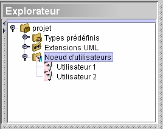

Le
noeud d'utilisateurs

Le noeud d'utilisateurs renvoie à la liste des utilisateurs.
Puisque les utilisateurs peuvent être définis comme des
propriétaires, il
ne peut y avoir qu’un seul noeud d'utilisateurs par projet.
Il y a deux façons différentes d’ajouter un utilisateur :
- De la fenêtre d’explorateur, sélectionnez Noeud
d’utilisateurs. Ensuite localisez
l’outil Ajouter
 dans la barre
d’outil Édition. Cliquez-le, puis choisissez Utilisateur
dans la liste.
dans la barre
d’outil Édition. Cliquez-le, puis choisissez Utilisateur
dans la liste.
- Cliquez-droit sur Noeud d’utilisateur et du menu
contextuel choisissez Ajouter
> Utilisateur.
